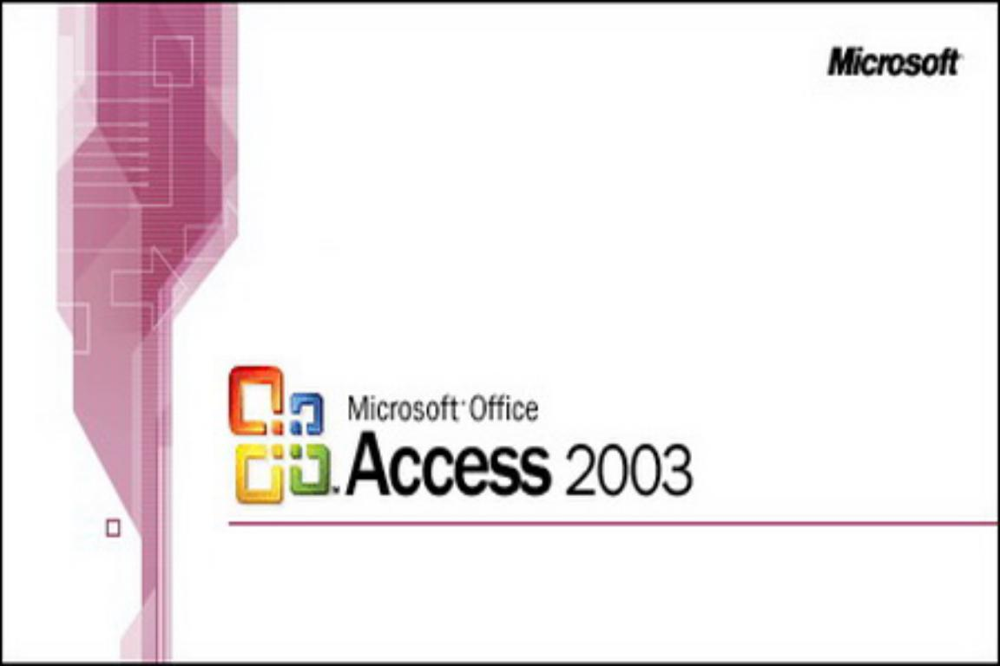

Microsoft Access is a database management system for Windows that combines the relational Microsoft Jet Database Engine with a graphical user interface and software-development tools. Microsoft Access stores data in its own format based on the Access Jet Database Engine. It can also import or link directly to data stored in other applications and databases.This software is based on datasheet or records and The extention which is used for Microsoft Access is ".mdb" and its command key is"msaccess"
This is a link of MS Access 2003 IDE
"THE END"
|  |